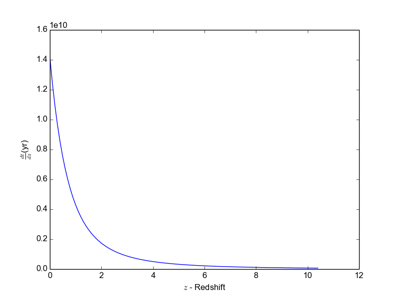
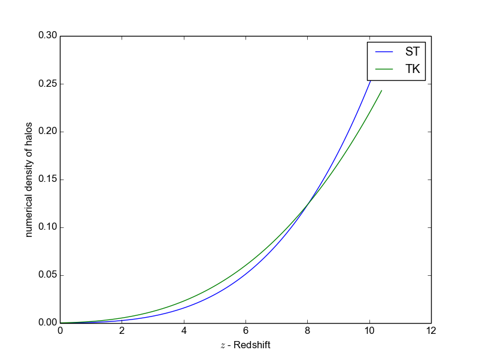

Pycosmicstar
Python Cosmic Star Formation Rate
Instalation.
$sudo apt-get install python-pytools
$sudo python setup.py install
python test_all.py
Usage.
The cosmological background
- The $\Lambda$CDM cosmology class can be instanced as:
from pycosmicstar.lcdmcosmology import lcdmcosmology
#Instancing a LCDM Object.
lcdmUniverser = lcdmcosmology(omegam=0.24,
omegab=0.04,
omegal=0.73,
h=0.7)Plotting the time variation with redshift, the age of the Universe as a function of the redshift and the Hubble parameter.
z = arange(0, 10.5, 0.1)
#The time variation with redshift
plt.plot(z, log([lcdmUniverser.dt_dz(zi) for zi in z]))
plt.xlabel(r"$z$ - Redshift")
plt.ylabel(r"$\log(\frac{\frac{dt}{dz}}{yr})$")
plt.show()
# The age of the Universe as a function of the redshift
plt.plot(z, [lcdmUniverser.age(zi) for zi in z])
plt.xlabel(r"$z$ - Redshift")
plt.ylabel(r"$t$ (yr)")
plt.show()
#The Hubble parameter
plt.plot(z, [lcdmUniverser.H(zi) for zi in z])
plt.xlabel(r"$z$ - Redshift")
plt.ylabel(r"$H(z)$ ")
plt.show()

Figure 1. $\frac{dt}{dz}$ x $z$
Figure 1. $\frac{dt}{dz}$ x $z$

Figure 2. Age of the Universe.

Figure 3. Hubble Parameter.
The attributes and public methods of lcdmcosmology class:
- Attributes: omegam: ($\Omega_{m}$, default 0.24) - The dark matter parameter; omegab : ($\Omega_{b}$, default 0.04) - The baryonic parameter; omegal: ($\Omega_{\Lambda}$, default 0.73) - The dark energy parameter; h: (default, 0.7) - The h of the Hubble constant ($H_{0} = 100h$ ).
- Public methods:
- dt_dz(z) - time, $t$, and redshift, $z$, relation;
- H(z) - Hubble parameter as a function of $z$;
- dr_dz(z) - Comove distance variation for flat Universe;
- dV_dz(z) - Comove volume variation;
- growthFunction(z) - Growth Function of cosmological density perturbations;
- dgrowth_dt(z) - derivative of the growth function with respect to time;
- dsigma2_dk(k) - derivative of the variance of linear density field, $\sigma$ ;
- sigma(kmass) - variance of linear density field (\textbf{kmass} is the mass scale);
- rodm(z) - dark matter density;
- robr(z) - baryonic matterdensity.
The Hierarchical Scenario of Structure Formation
Creating a new structure object, given a dark halo mass function:from pycosmicstar.structures import structures
from pycosmicstar.lcdmcosmology import lcdmcosmology
import matplotlib.pyplot as plt
from numpy import arange, log
#Creating a object considering the
#Sheth & Tormen (1999) mass function.
stUniverser = structures(cosmology=lcdmcosmology, omegam=0.24,
omegab=0.04, omegal=0.73, h=0.7, massFunctionType="ST")
#Creating a object considering the
#Tinker et al. (2010) mass function.
tkUniverser = structures(cosmology=lcdmcosmology, omegam=0.24,
omegab=0.04, omegal=0.73, h=0.7, massFunctionType="TK", delta_halo=200)
z = arange(0, 10.5, 0.1)
#Plotting the fraction of baryons into structures
plt.plot(z, [stUniverser.fbstruc(zi) for zi in z], label="ST")
plt.plot(z, [tkUniverser.fbstruc(zi) for zi in z], label="TK")
plt.xlabel(r"$z$ - Redshift")
plt.ylabel(r"$f_{b}$")
plt.legend()
plt.show()
#plotting the accretion rate of baryons into structure
plt.plot(z, [stUniverser.abt(1.0 / (1.0 + zi)) for zi in z],
label="ST")
plt.plot(z, [tkUniverser.abt(1.0 / (1.0 + zi)) for zi in z],
label="TK")
plt.xlabel(r"$z$ - Redshift")
plt.ylabel(r"$a_{b}$")
plt.legend()
plt.show()
#Plotting the numerical density of dark haloes.
plt.plot(z, [stUniverser.numerical_density_halos(zi) for zi in z],
label="ST")
plt.plot(z, [tkUniverser.numerical_density_halos(zi) for zi in z],
label="TK")
plt.xlabel(r"$z$ - Redshift")
plt.ylabel(r"numerical density of halos")
plt.legend()
plt.show()

Figure 4: The fraction of baryons into structures according to
dark haloes mass function.

Figure 5: The accretion rate of baryons into structures according to
dark haloes mass function.

Figure 6: Numerical density of dark haloes.
Figure 6: Numerical density of dark haloes.
The attributes and public methods:
- Attributes (Keys):
- cosmology : A
class that implements the methods of the abstract class cosmology;
- lmin (default - 6.0):
$\log_{10}$ of the minimal mass of dark haloes where it is possible to
start the star formation.
- zmax (default - 20.0): the redshift where the star formation starts.
- omegam:
($\Omega_{m}$,
default 0.24) - The dark matter parameter;
- omegab : ($\Omega_{b}$, default 0.04) - The baryonic parameter;
- omegal: ($\Omega_{\Lambda}$, default 0.73) - The dark energy parameter;
- h: (default, 0.7) - The h of the Hubble constant ($H_{0} = 100h$ ).
- cacheDir (default
None): The directory where the cache file will be storaged;
- cacheFile (default None): Name of the database for
caching;
- massFunctionType
(default "ST"): the dark haloes mass function type
- delta_halo (default
200): The $\Delta_{h}$ of Tinker et al. mass function;
- qBurr (default 1):
The Coeficienty of Burr Distribution;
- Public Methods:
- massFunction(lm, z) - Return the dark haloes mass function, lm is the $\log_{10}$ of the mass of the dark halo;
- fbstruc(z) - Return
the
faction of barions into structures;
- halos_n(z) - return the integral of the mass function of dark halos multiplied by mass in the range of $\log(M_{min})$ a $\log(M_{max})$;
- numerical_density_halos(z) - Return the numerial density of dark halos within the comove volume;
- abt(z) - return the accretion rate which accounts for the increase in the fraction of baryons in structures.
The Cosmic Star Formation Rate
Instancing cosmic star formation rate using differents dark haloes mass function:
from pycosmicstar.cosmicstarformation import cosmicstarformation
from pycosmicstar.lcdmcosmology import lcdmcosmology
from pycosmicstar.observationalCSFR import ObservationalCSFR
import matplotlib.pyplot as plt
from numpy import arange, array
z = arange(0, 20, 0.1)
#Cosmic Star Formation Rate using Tinker et al. dark haloes mass function
myCSFR_TK = cosmicstarformation(cosmology=lcdmcosmology,
massFunctionType="TK",
delta_halo=200)
#Cosmic Star Formation Rate using Press and Schechter dark haloes mass function
myCSFR_PS = cosmicstarformation(cosmology=lcdmcosmology,
massFunctionType="PS")
#Cosmic Star Formation Rate using Seth et al. dark haloes mass function
myCSFR_ST = cosmicstarformation(cosmology=lcdmcosmology)
csfrTK = array([myCSFR_TK.cosmicStarFormationRate(zi) for zi in z])
csfrPS = array([myCSFR_PS.cosmicStarFormationRate(zi) for zi in z])
csfrST = array([myCSFR_ST.cosmicStarFormationRate(zi) for zi in z])
obsCSFR = ObservationalCSFR()
x, y = obsCSFR.csfredshift()
xerr, yerr = obsCSFR.errorData()
plt.errorbar(x, y, yerr=yerr, xerr=xerr, fmt='.')
plt.plot(z, csfrTK, label="TK")
plt.plot(z, csfrST, label="ST")
plt.plot(z, csfrPS, label="PS")
plt.legend(loc=4)
plt.yscale('log')
plt.ylabel(r'$\dot{\rho}_{*}$( M$_{\odot}$Mpc$^{-3}$yr$^{-1}$)')
plt.xlabel(r'$z$')
plt.show()
The attributes and Public methods:
- Attributes:
- The attributes of structure;
- tau (default 2.5 ): time scale, in Gyr, of the CSFR.
- eimf (default 1.35): exponent of the Initial Mass Function.
- nsch (default 1): the normalization factor in the CSFR model.
- lmin (default 6.0): log10 of the minal mass of the dark halo where it is possible to have star formation.
- zmax (default 20.0): redshift that start the star formation.
- Public Methods:
- cosmicStarFormationRate(z) - returns the cosmic star formation rate, $\dot{\rho}_{*}(z)$, in M$_{\odot}$yr$^{-1}$Mpc$^{-3}$;
- gasDensityInStructures(z) - returns the density of gas in structures, $\rho_{g}(z)$, in M$_{\odot}$Mpc$^{-3}$;
- phi(m) - returns the
Initial Mass Function (IMF), $\Phi(m)$, which gives the distribution of
the stellar mass.